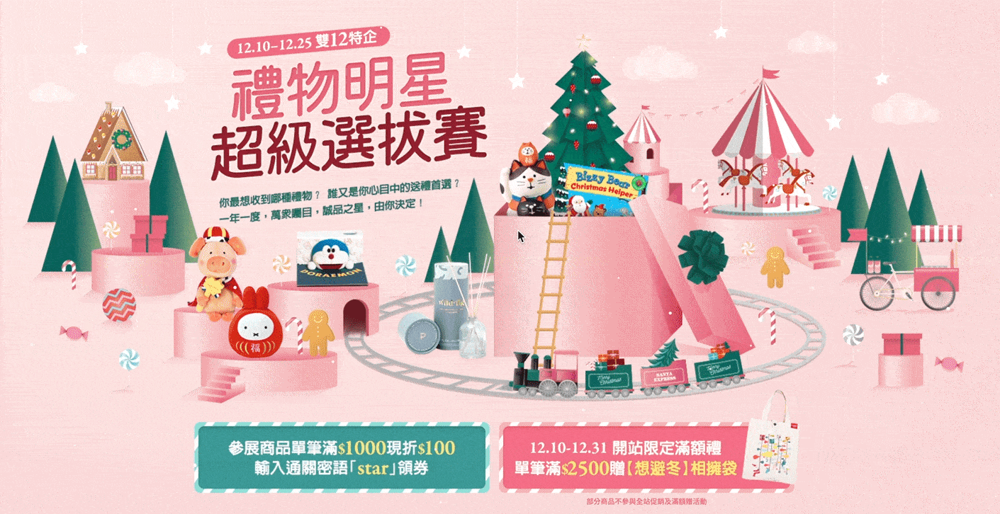
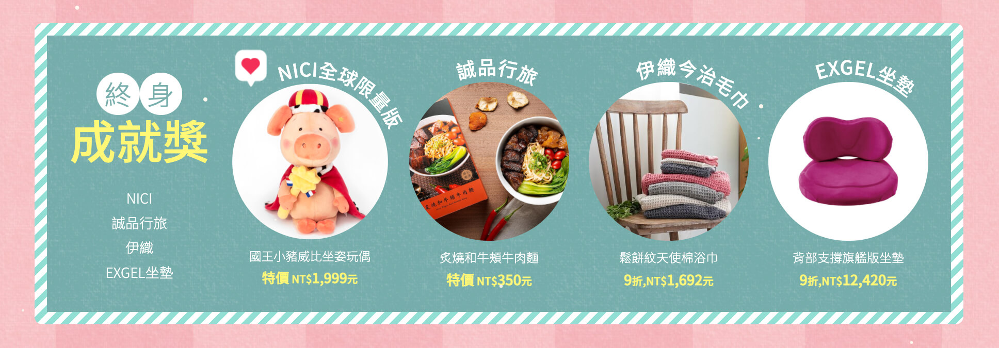
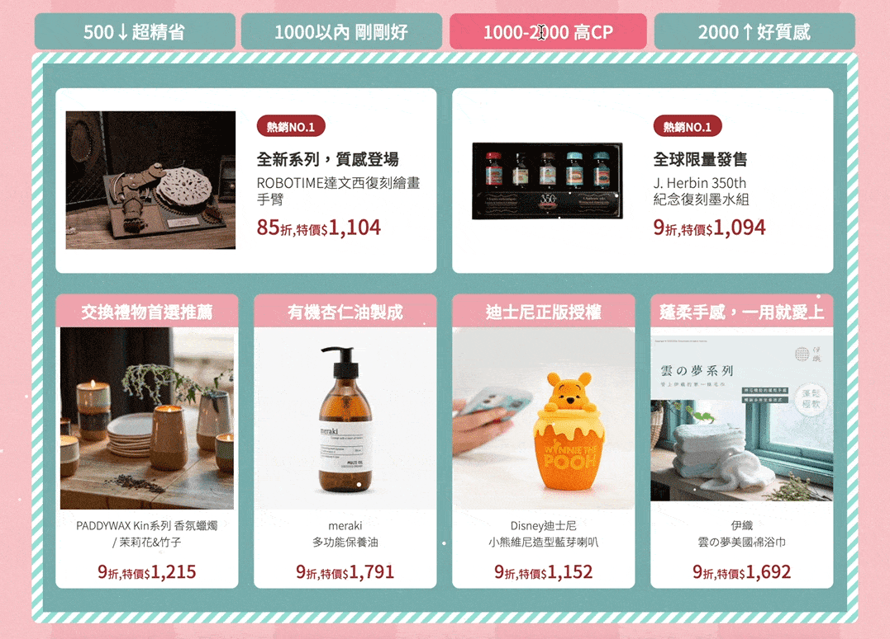

<!DOCTYPE html>
<html lang="zh-tw">
<head><meta charset="utf-8">
<meta http-equiv="X-UA-Compatible" content="IE=edge">
<title>MinnaLee</title>
<meta name="description" content=" ">
<meta name="viewport" content="width=device-width, initial-scale=1">
<link rel="stylesheet" href="https://himinna.com/m/css/bootstrap.min.css">
<link rel="stylesheet" href="//fonts.googleapis.com/css?family=Roboto:400,300,700,400italic">
<link rel="stylesheet" href="https://himinna.com/m/css/font-awesome.min.css">
<link rel="stylesheet" href="https://himinna.com/m/css/owl.carousel.css">
<link rel="stylesheet" href="https://himinna.com/m/css/owl.theme.css">
<link href="https://fonts.googleapis.com/css2?family=Nothing+You+Could+Do&display=swap" rel="stylesheet">
<link href="https://fonts.googleapis.com/css2?family=Noto+Serif+TC:wght@500;700&display=swap" rel="stylesheet">
<link href="https://fonts.googleapis.com/css2?family=EB+Garamond&display=swap" rel="stylesheet">


  <link href="https://himinna.com/m/css/style.default.css" rel="stylesheet" id="theme-stylesheet">

 

  
    <!--[if lt IE 9]>
        <script src="https://oss.maxcdn.com/html5shiv/3.7.2/html5shiv.min.js"></script>
        <script src="https://oss.maxcdn.com/respond/1.4.2/respond.min.js"></script>
    <![endif]-->
  


<link href="https://himinna.com/m/css/custom.css" rel="stylesheet">
<link rel="shortcut icon" href="https://himinna.com/m/img/favicon.ico">


</head>
<body>
  <div id="all">
      <div class="container-fluid">
          <div class="row row-offcanvas row-offcanvas-left">
              <div id="sidebar" class="col-xs-6 col-sm-4 col-md-3 sidebar-offcanvas">
  <div class="sidebar-content">
    <div class="portrait"></div>
    <h1 class="sidebar-heading"><a href="https://himinna.com/m/">MinnaLee</a></h1>
    <h3 class="profession">Web Designer / UI Designer</h3>
    
      <p class="sidebar-p">I am a web designer with more than 5 years of experience. I really love to spend time creating a simple and beautiful design and also standing for quality.</p>
    
    <ul class="sidebar-menu">
      
        <li><a href="https://himinna.com/m/about/">About</a></li>
      
        <li><a href="https://himinna.com/m/portfolio/">Work</a></li>
      
        <li><a href="https://himinna.com/m/contact/">Contact</a></li>
      
    </ul>
    <p class="social">
  
  <a href="https://www.facebook.com/min901/" data-animate-hover="pulse" class="external facebook">
    <i class="fa fa-facebook"></i>
  </a>
  
  
  
  
  <a href="https://www.instagram.com/hiwoomii/" title="" class="external instagram">
    <i class="fa fa-instagram"></i>
  </a>
  
  
  <a href="mailto:miyi.design@gmail.com" data-animate-hover="pulse" class="email">
    <i class="fa fa-envelope"></i>
  </a>
  
  
  
  
  
  
  
</p>


    <div class="copyright">
      <p class="credit">
        
          copyright &copy; 2021 Minna Lee 
        
      </p>
    </div>
  </div>
</div>

              
<div class="col-xs-12 col-sm-8 col-md-9 content-column white-background">
  <div class="small-navbar visible-xs">
  <button type="button" data-toggle="offcanvas" class="btn btn-ghost pull-left"> <i class="fa fa-user"> </i></button>
</div>
<h1 class="small-navbar-heading"><a href="https://himinna.com/m/">MinnaLee</a></h1>


  <div class="row">
    <div class="col-lg-12">
      <div class="content-column-content">
         <h2>1212禮物明星選拔</h2>
         <p>雙十二禮物特企，最想收到什麼禮物？
什麼是你的送禮首選呢？</p>
<hr>
<p>PROJECT  |  活動網頁設計 Web Design<br>
RESOURCES  |  shutterstock、eslite<br>
DURATION  |   Dec. 2020 , 5 Days<br>
ROLE  |  Designer、F2E</p>
<p><a href="https://events.eslite.com/2020/201209-gifts/index.html" target="_blank" rel="noreferrer noopener">點我看完整頁面</a>
<br>
有別以往大紅大綠的聖誕節設計，這次走粉色調，較清新童趣的視覺風格，也因應主題選物的概念，主視覺做了許多動態及互動效果。</p>
<ul>
<li>利用CSS做出細緻的禮物跳動效果，隨機跳動，讓畫面更活潑，也營造一種『選我選我』的感覺。</li>
<li>用CSS獨有的偽元素，做出滑鼠移入，出現『選我』的對話框，製造互動效果。滑鼠移入後原有的動畫也會隨即停止，直到滑鼠再度移出。</li>
<li>背景緩慢升降的星星，以及紛飛細雪。</li>
</ul>
<p></p>
<ul>
<li>為減少大量的背景圖片，使用雙層背景來打造條紋邊框的效果，再將常用的背景樣式用CSS :root管理，一來不用寫太多次，也方便調整。</li>
<li>此次設計了一個特殊的版型，也是首次使用textPath路徑文字，這樣的呈現方式我很喜歡，也讓版型更有變化。</li>
<li>滑鼠移入後出現like的愛心圖示，模擬投票給讚的感覺。</li>
</ul>
<p></p>
<ul>
<li>運用JS寫了簡易的分類頁籤，讓同類型的商品可以擺一起，使用者的瀏覽體驗會更好，也方便依需求找禮物。而手機版為了避免使用者滑過不知道可以點擊，所以原本分類的區塊變成全部展開，依序排列。</li>
<li>後來發現，如果把游標cursor屬性換成pointer，點擊會更直覺。</li>
</ul>
<p></p>
<p>收穫與心得：<br>
不論是視覺、版型、動畫都花了很多心力規劃與執行，很喜歡這樣的聖誕節風格，主視覺的互動動畫，獲得一致的好評，也有效地增加使用者的點擊率、以及停留的時間。程式上也有很多新的嘗試，找資料的過程學習到很多，收穫滿滿的一個專案。</p>
         
      </div>
    </div>
  </div>
</div>

          </div>
      </div>
  </div>
  <script src="https://himinna.com/m/js/jquery.min.js"></script>
<script src="https://himinna.com/m/js/bootstrap.min.js"></script>
<script src="https://himinna.com/m/js/jquery.cookie.js"> </script>
<script src="https://himinna.com/m/js/ekko-lightbox.js"></script>
<script src="https://himinna.com/m/js/jquery.scrollTo.min.js"></script>
<script src="https://himinna.com/m/js/masonry.pkgd.min.js"></script>
<script src="https://himinna.com/m/js/imagesloaded.pkgd.min.js"></script>
<script src="https://himinna.com/m/js/owl.carousel.min.js"></script>
<script src="https://himinna.com/m/js/front.js"></script>


</body>
</html>
